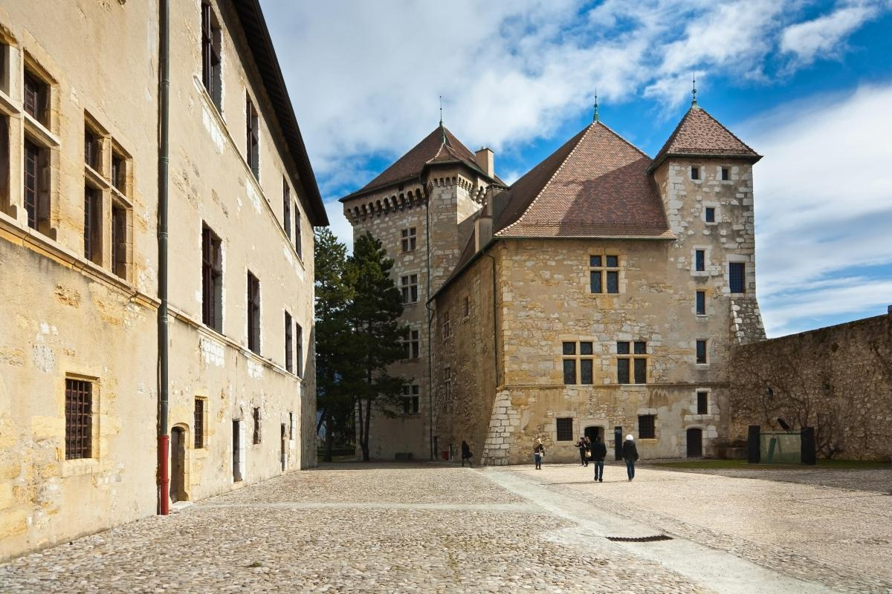

Annecy, France, is a stunning town in the Auvergne-Rhône-Alpes region, often called the "Venice of the Alps" because of its picturesque canals and charming old town.
It's famous for:
Lake Annecy

Crystal clear waters of Lake Annecy
Breathtaking mountain views
- One of the cleanest lakes in Europe, thanks to strict environmental protection.
- Surrounded by breathtaking mountain views, making it perfect for relaxation and photography.
- Activities include:
- Swimming – Several beaches like Plage d'Albigny and Plage de l'Impérial.
- Boat rides – Rent a pedal boat, motorboat, or take a scenic cruise.
- Kayaking & Paddleboarding – Calm waters make it ideal for beginners.
- Cycling – A 42 km bike path circles the lake.
- Diving – Yes! There are underwater remains of prehistoric stilt houses.
- Best time to visit: Spring to early autumn (April–September) for water activities.

Swimming in the pristine waters

Scenic boat rides on the lake
Kayaking adventures
Cycling around the lake
Old Town (Vielle Ville)

Charming canals of Vielle Ville
- A fairytale-like district with cobblestone streets, pastel-colored houses, and flower-lined canals.
- The Thiou River flows through the town, creating a Venice-like atmosphere.
- Key spots to explore:
- Rue Sainte-Claire – A charming street with medieval arcades and cafés.
- Pont des Amours (Lovers' Bridge) – A romantic spot with scenic lake views.
- Marché d'Annecy – A vibrant market selling local cheeses, meats, and crafts (Tuesdays, Fridays, and Sundays).
- Perfect for: Strolling, photography, and experiencing Annecy's history.
Cozy cafés in Rue Sainte-Claire
Pont des Amours (Lovers' Bridge)
Vibrant local market
Palais de l'Isle (The Island Palace)

The iconic Island Palace
- A 12th-century fortress that looks like a ship floating in the canal.
- One of the most photographed buildings in France!
- Served as:
- A residence for the Lord of Annecy.
- A courthouse in the 16th century.
- A prison during various historical periods.
- Now a museum, showcasing Annecy's history and medieval architecture.
- Great for: History lovers and anyone wanting an iconic Annecy photo.
Château d'Annecy (Annecy Castle)

Medieval Château d'Annecy
- A medieval castle that was the home of the Counts of Geneva.
- Features:
- A tower with panoramic views over Annecy.
- The Museum of Alpine History, showcasing local art, archaeology, and furniture.
- An aquatic exhibit with details about Lake Annecy's ecosystem.
- Pro tip: Visit at sunset for amazing views over the town and lake.
Outdoor Activities in Annecy
Paragliding over Lake Annecy
Hiking trails with spectacular views
- Paragliding - One of the top spots in the world! Fly over the lake from Col de la Forclaz.
- Hiking
- Mont Veyrier (Easy, stunning lake views)
- La Tournette (Challenging, highest peak in the area)
- Cycling - The Voie Verte du Lac offers a scenic 42 km ride around the lake.
- Skiing in Winter – Resorts like La Clusaz and Le Grand Bornand are just 30–40 minutes away
Mont Veyrier hiking trail
La Tournette challenging peak

Winter skiing near Annecy
Food & Cheese Specialties
Traditional Tartiflette
Delicious Raclette

Fondue Savoyarde
- Tartiflette – A hearty dish with potatoes, melted Reblochon cheese, onions, and bacon.
- Raclette - Melted cheese scraped onto potatoes and charcuterie.
- Fondue Savoyarde – A warm, melted cheese dip with bread.
- Diots (Savoyard Sausages) – Local pork sausages in white wine sauce.
- Local wines – Try white wines like Apremont or Roussette de Savoie.
- Sweet Treats – Don't miss local pastries and desserts!
Traditional Diots Sausages
Local Savoie wines
Sweet local treats
Best Time to Visit Annecy
Autumn colors in Annecy
- Spring (April–June): Flowers bloom, and the weather is mild.
- Summer (July–August): Best for swimming and outdoor activities, but also the busiest time.
- Autumn (September–October): Fewer crowds, beautiful fall colors.
- Winter (December–March): Christmas markets and skiing nearby.